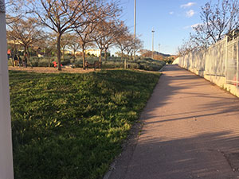

Aire Pur
Parc de la Fontsanta
El parc ocupa tres termes municipals: Sant Joan Despí, Esplugues de Llobregat i Sant Just Desvern. Tradicionalment ocupat per les vinyes i els conreus de secà i avui totalment urbanitzat, té un recorregut curt i amb fort pendent. Abans d'arribar al Parc és canalitzada fins al riu Llobregat.
